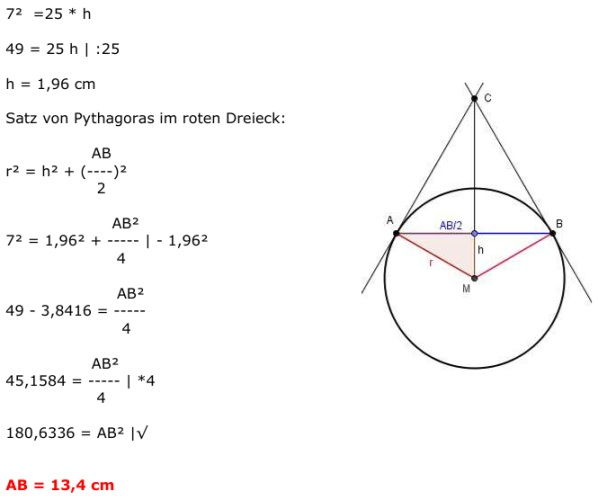
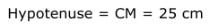

Aufgabe 116 Wie groß ist der Radius r und der Abstand von A nach B, wenn der Abstand von C nach M 25 cm beträgt und A von C 17 cm weiter entfernt ist als von M? Satz von Pythagoras für das rote Dreieck. AM = r AC = r + 17 252 = r2 + (r + 17)2 635 = r2 + r2 + 34r + 289 | -625 2r2 + 34r - 336 = 0 | :2 r2 + 17r - 168 = 0 p, q - Formel p = 17 ; q = -168  r1,2 = -8,5 ± 15,5 r1 = -8,5 + 15,5 = 7 cm r2 = -8,5 - 15,5 = -24 keine Lösung, es gibt keine negative Länge Kathetensatz im roten Dreieck: Kathete = r = 7 cm Hypotenusenabschnitt = h Hypotenuse = CM = 25 cm 72 =25 * h 49 = 25 h | :25 h = 1,96 cm  Satz von Pythagoras im roten Dreieck: AB r2 = h2 + (----)2 2 AB2 72 = 1,962 + ----- |-1,962 4 AB2 49 - 3,8416 = ----- 4 AB2 45,1584 = ----- |*4 4 180,6336 = AB2 |√ AB = 13,4 cm